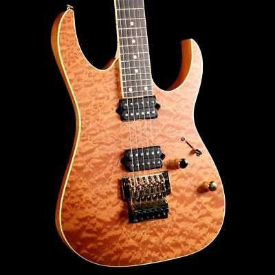

Macassar Ebony produces a tight low and mid range with an iconic attack on the high end. It also features a quick response and rich sustain. The neck for shredders - 17mm thickness at 1st fret and 19mm at the 12th. A pair of high-output DiMarzio Air Norton™ and The Tone Zone® pickups provides a huge sound with a broad dynamic range. Based in Nagoya, Aichi, Japan, Hoshino Gakki were one of the first Japanese musical instrument companies to gain a significant foothold in import guitar sales in the United States and Europe, as well as the first brand of guitars to mass-produce the seven-string guitar and eight-string guitar, Macassar Ebony produces a tight low and mid range with an iconic attack on the high end.
Hoshino Gakki also had semi-acoustic, nylon- and steel-stringed acoustic guitars manufactured under the Ibanez name. Most Ibanez guitars were made by the FujiGen guitar factory in Japan up until the mid- to late 1980s, and from then on Ibanez guitars have also been made in other Asian countries such as Korea, China, and Indonesia. During the early 1980s, the FujiGen guitar factory also produced most of the Roland guitar synthesizers, including the Stratocaster-style Roland G-505, the twin-humbucker Roland G-202 (endorsed by Adrian Belew, Eric Clapton, Dean Brown, Jeff Baxter, Yannis Spathas, Christoforos Krokidis, Steve Howe, Mike Rutherford, Andy Summers, Neal Schon and Steve Hackett) and the Ibanez X-ING IMG-2010.